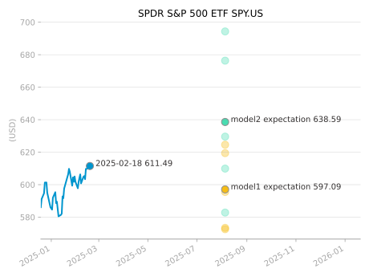
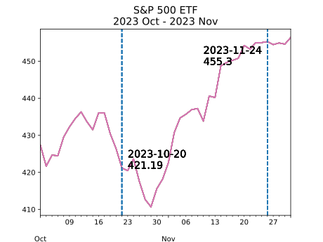
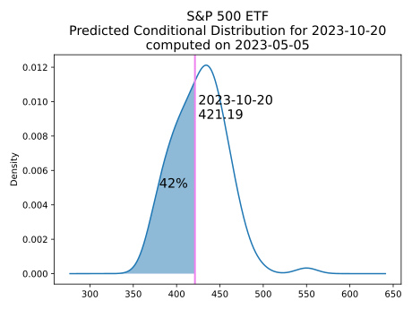
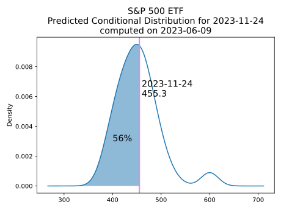
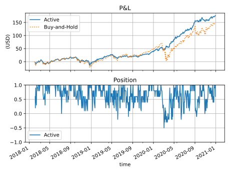
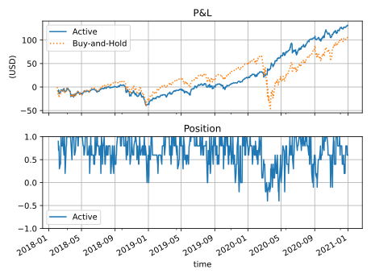
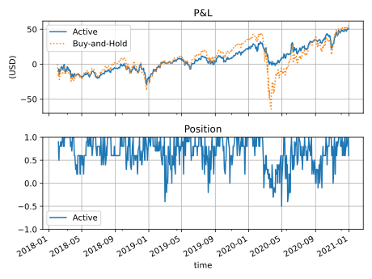
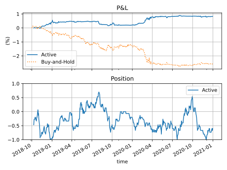
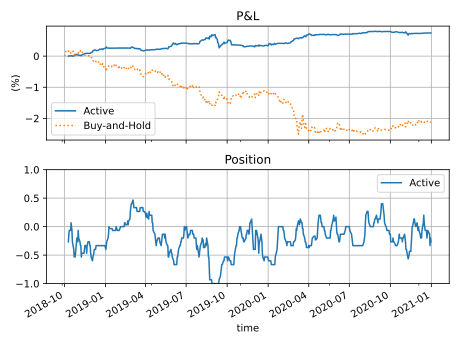

Time Series Terminal Whitepaper
Brief Solutions Ltd, May 2022
The Problem
Is time series A predictive of time series B?
i.e. given all information about A's value up to time , is it predictive of the conditional distribution of B's value at a future time , with being the prediction horizon?
Is this relationship causal?
i.e. the presence of A in the prediction model makes the prediction of the future of B better, its absence makes the prediction worse. Refer to hannart2016 as well as Granger Causality. For a philosophical overview, refer to Causation.
The Solution
Random experiments to identify the causal predictors
Given a set of time series data, tsterm.com computes the predictive power of any series A for any series B, for a pre-determined prediction horizon, by conducting many random experiments to check the difference of prediction performance when A is present vs when A is absent.
For an example of result, at the close of Thu 14 Dec 2023, the causal predictors for the S&P 500 ETF SPY.US in 24 weeks would read like
Train a group of models
Once the causal predictors are selected, we train a group of models, each to predict a complete conditional distribution of the target time series' value.
For example, as of 2025-02-18 market close, below are two models' predicted outcomes for SPY.US in 24 weeks (2025-08-05), colored in green and yellow respectively. The average of the predicted outcomes (the "expectation") are in circled markers.

How to use the results of all models?
We have to "aggregate" them: the predicted outcomes can be pooled together across the models. Alternatively, a model can vote "up" or "down" by comparing its own expectation with the last price. In case it has predicted an infinitely wide distribution, it would vote "undecided".
On the above example, out of the two models, one would vote "up", one vote "down", or models vote "up", models vote "down". The net vote is that models vote neither "up" or "down".
Goodness of the Probabilistic Prediction
Whether from a particular model or pooled over all the models, we can test the goodness of the predicted distributions over time:
Does the realised value follow well the predicted conditional distribution generally?
For a given time point, we denote by realised probability level how much probability mass in the predicted conditional distribution is below the realised value. It is always a value between 0 and 1. One may prove that if the prediction is well done, the realised probability level should be distributed uniformly between 0 and 1. It cannot hover around any particular smaller area between 0 and 1. It is therefore equivalent to testing the hypothesis:
The realised probability level follows the uniform distribution between 0 and 1.
For example, for prediction of S&P 500 ETF SPY.US, 24-week ahead horizon, let us first look at two target dates Fri 2023-10-20 and Fri 2023-11-24.

For Fri 2023-10-20, the prediction was made 24 weeks before on Fri 2023-05-05. 42% of the predicted values were below the realistion 421.19, the realised probability level was thus 42%, or 0.42.

For Fri 2023-11-24, the prediction was made 24 weeks before on Fri 2023-06-09. 56% of the predicted values were below the realisation 455.3, the realised probability level was thus 56%, or 0.56.

For each target date we obtain one realised probability level. On a sample of realised probability levels we will run a statistical test of the hypothesis that this sample follow the uniform distribution between 0 and 1. For more detail refer to diebold1998.
Trading Backtest
On financial data, we can additionally perform a trading backtest to test the goodness. In one way, the signal is the net vote as described above.
Take for example 1-month forecast horizon. The causal predictors are updated daily, new models get trained gradually, and model votes take place daily. Each signal concerns the future 1 month, so the next-day position would be the average of the signals that were output over the last one month.
With 2-day ahead forecast horizon, under the ideal condition of no trading cost, the performances would be:
For Invesco Nasdaq-100 ETF,

For SPDR S&P 500 ETF,

For SPDR Dow Jones Industrial Average ETF,

For interest rates, let's switch to a 1-week ahead forecast horizon:
For US 5-Year Treasury Yield Rate,

For US 10-Year Treasury Yield Rate,

References
Hannart, A., J. Pearl, F. E. L. Otto, P. Naveau, and M. Ghil, Causal counterfactual theory for the attribution of weather and climate-related events, Bulletin of the American Meteorological Society, 97(1):99-110, 2016.
Koenker, R. (2005). Quantile Regression (Econometric Society Monographs). Cambridge: Cambridge University Press. doi:10.1017/CBO9780511754098
Komunjer, Ivana, Quasi-maximum likelihood estimation for conditional quantiles, Journal of Econometrics, Volume 128, Issue 1, September 2005, Pages 137-164.
Diebold, F.X., Gunther, T. and Tay, A., Evaluating Density Forecasts, 1998.